정진팜 실적관리 시스템 — 사용자 매뉴얼
| 항목 | 내용 |
|---|---|
| 대상 | 관리자(CSO), 영업사원 |
| 버전 | 2026-05-29 (Laravel 재구축 기준) |
| 스크린샷 | images/ — 로컬 http://localhost:8088 기준 자동 캡처 |
| HTML 미리보기 | USER_MANUAL.html — 스크린샷 포함 브라우저용 (npm run manual:html) |
| 개발·설계 문서 | docs/README.md — 개발자·기획용 (본 매뉴얼과 구분) |
브라우저에서 스크린샷까지 보려면 (MD만으로는 에디터·GitHub에 따라 이미지가 안 보일 수 있음):
npm run manual:html # → docs/manual/USER_MANUAL.html
open docs/manual/USER_MANUAL.html
스크린샷 재캡처 + HTML 한 번에:
npm run manual:build # manual:screenshots + manual:html
공유용 단일 파일(이미지 base64 내장):
npm run manual:html:standalone # → USER_MANUAL.standalone.html
스크린샷 목록
| 파일 | 화면 |
|---|---|
01-login.png |
로그인 |
02-admin-dashboard.png |
관리자 대시보드 |
03-notices.png |
공지사항 목록 |
04-products.png |
제품 목록 |
05-companies.png |
거래처 목록 |
06-performance-list.png |
실적 목록 |
07-performance-create.png |
실적 등록 |
08-settlements.png |
정산 목록 |
09-commission-summary.png |
수수료 명세(관리자) |
10-monthly-report.png |
월간 보고서 |
11-sales-quotas.png |
목표 관리 |
12-users.png |
사용자 관리 |
13-pharmacies.png |
약국 목록 |
14-performance-detail.png |
실적 상세 |
15-settlement-detail.png |
정산 상세 |
16-company-detail.png |
거래처 상세(담당 배정) |
20-sales-dashboard.png |
영업 대시보드 |
21-sales-performance-list.png |
실적 목록(영업) |
22-sales-performance-create.png |
실적 등록(영업) |
23-sales-commission-statement.png |
수수료 명세서(영업) |
1. 시스템이 하는 일
정진팜 실적관리 시스템은 영업 실적 등록 → 검수·승인 → 거래처별 월 정산 → 수수료 확인까지 한곳에서 처리합니다.
- 영업사원: 담당 거래처에 대한 실적을 등록·제출하고, 본인 수수료·목표 달성률을 확인합니다.
- 관리자: 제품·거래처 마스터, 실적 검수·승인, 정산 생성·지급, 전사 보고서·사용자 관리를 담당합니다.
2. 로그인
- 브라우저에서 시스템 주소(예:
http://localhost:8088)에 접속합니다. - 이메일과 비밀번호를 입력한 뒤 로그인합니다.
- 비활성(
is_active = false) 계정은 로그인할 수 없습니다. 계정이 잠겼다면 관리자에게 문의하세요. - 최초 로그인 후 관리 → 설정(프로필) 에서 비밀번호를 변경하는 것을 권장합니다.
관리자가 발급한 임시 비밀번호로 첫 로그인한 경우, 반드시 본인 비밀번호로 변경하세요.
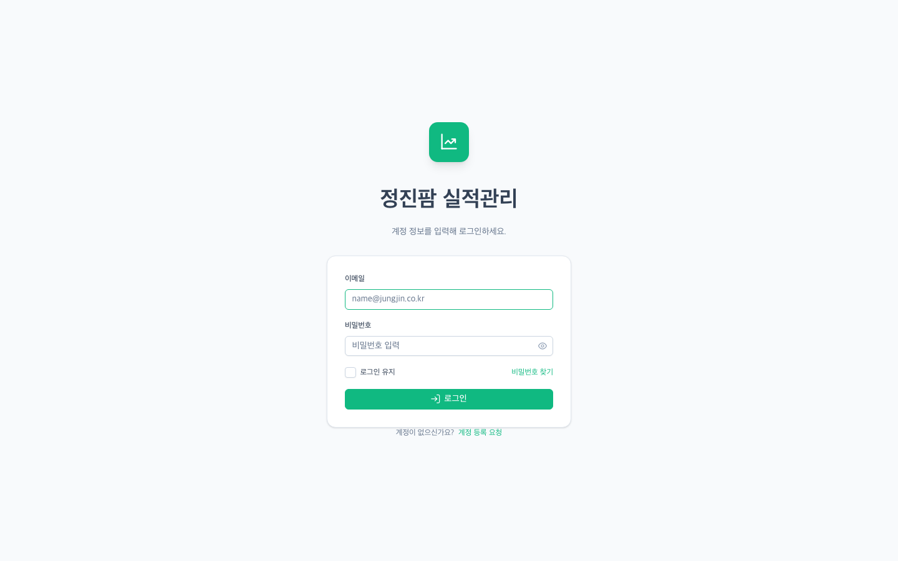
그림 1. 로그인 화면
3. 화면 구성
- 왼쪽 메뉴: 기능별 메뉴(역할에 따라 일부만 표시)
- 상단: 사용자 이름, 로그아웃, 모바일에서는 메뉴 열기 버튼
- 본문: 목록·상세·등록 폼
- 알림: 작업 성공·오류 메시지는 화면 상단(Toast) 또는 목록 위 배너로 표시됩니다.
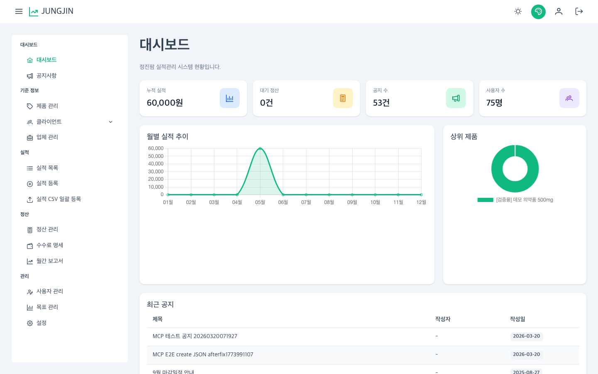
그림 2. 관리자 대시보드 — 왼쪽 메뉴·상단 사용자 영역·본문 카드/차트
4. 역할과 메뉴
4.1 역할
| 역할 | 설명 |
|---|---|
| 관리자 (admin) | 전체 데이터 조회·마스터 관리·실적 검수·정산·사용자 관리 |
| 영업사원 (sales) | 본인 실적 등록·조회, 공지 확인, 본인 정산·수수료·목표 조회 |
4.2 메뉴 구조 (2026-05, GAP-9 반영)
| 메뉴 그룹 | 항목 | 경로 | 관리자 | 영업사원 |
|---|---|---|---|---|
| 대시보드 | 대시보드 | /dashboard |
✅ | — |
| 대시보드 | 영업 대시보드 | /sales/dashboard |
— | ✅ |
| 대시보드 | 공지사항 | /notices |
✅ | ✅ |
| 마스터 관리 | 마스터 홈 | /master-data |
✅ | — |
| 마스터 관리 | 의약품 관리 | /products |
✅ | 조회 |
| 마스터 관리 | 약국 관리 | /pharmacies |
✅ | 조회 |
| 마스터 관리 | 병의원 관리 | /hospitals |
✅ | 조회 |
| 거래처 | 업체 관리 | /companies |
✅ | 조회 |
| 실적 | 실적 목록·등록·CSV | /performance … |
✅ | ✅(본인) |
| 정산 | 정산·수수료·월간 보고서 | /settlements … |
✅ | 본인 분 |
| 관리 | 사용자·목표·영업사원(조회)·설정 | /users … |
✅ | 설정만 |
5. 관리자 사용법
5.1 대시보드 (/dashboard)
- 통계 카드: 승인 실적 매출 합계, 미확정 정산 건수, 공지 수, 사용자 수
- 월별 매출 차트: 당해 연도 승인 실적 기준
- 상위 제품·최근 공지·영업사원 목표 달성률 요약
그림 3. 관리자 대시보드
5.2 공지사항
| 작업 | 방법 |
|---|---|
| 작성 | 목록 → 등록 → 제목·본문, 필요 시 상단 고정(필수) |
| 첨부 | 파일 최대 10개, 각 20MB 이하 (PDF, HWP, Office, 이미지, ZIP 등) |
| 읽음 확인 | 상세 하단 읽음 현황 — 전체 대비 읽은 비율·미열람자 확인 |
영업사원은 공지를 열면 자동으로 읽음 처리됩니다.
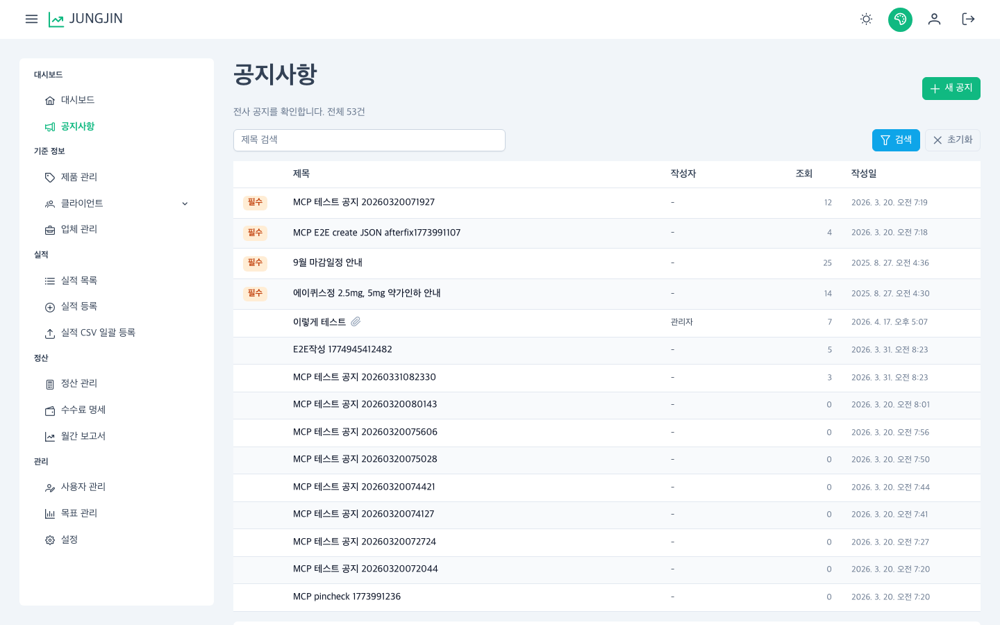
그림 4. 공지사항 목록
5.3 제품 관리
- 등록: 제품명, 보험코드, 제품코드, 제약사, 규격 등 입력
- 가격 이력: 보험약가 또는 매출가를 기간별로 등록
- 수수료율: 거래처 등급(A~E)·기간별 수수료율 매트릭스 설정
- 거래처 예외 단가: 특정 거래처만 다른 단가·수수료가 필요할 때 설정
- 승인 흐름:
초안 → 제출 → 검수 → 승인(반려 시 수정 후 재진행) - 판매 가능 조건: 승인됨이고 판매중(active) 인 제품만 실적 등록 가능
CSV 일괄 등록: 제품 목록 → CSV 가져오기 메뉴에서 샘플 형식 확인 후 업로드
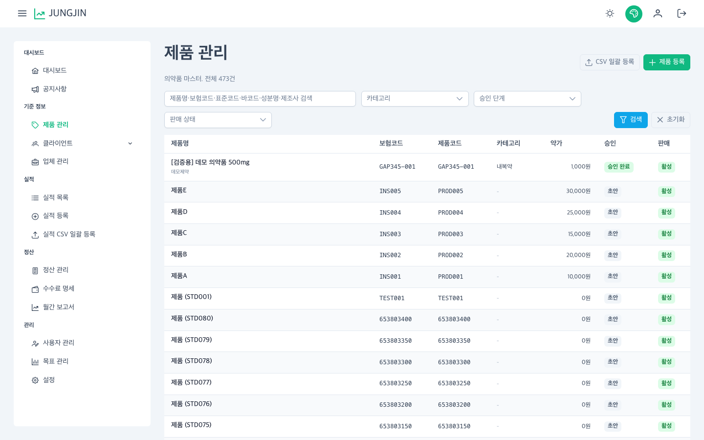
그림 5. 제품 관리 목록
5.4 거래처(업체) 관리
- 거래처명, 사업자번호, 담당자, 기본 수수료 등급 관리
- 승인 상태가
승인됨인 거래처만 실적 등록 가능 - 담당 영업사원 배정: 거래처 상세 → 담당 영업사원 추가·해제 (동일 조합 중복 불가)
- 최근 6개월 정산 요약 카드로 거래처별 정산 이력 확인
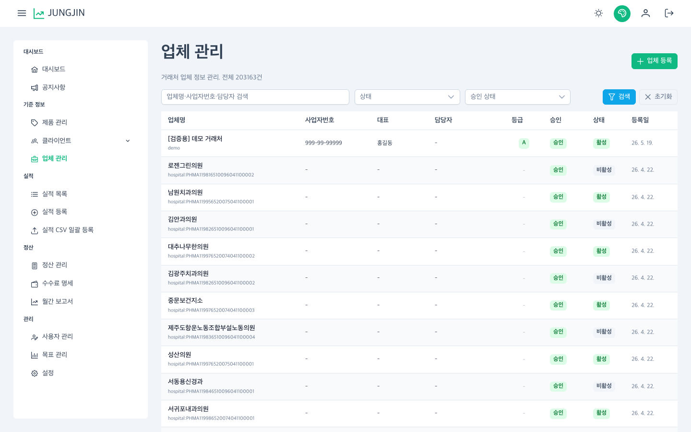
그림 6. 업체(거래처) 관리 목록
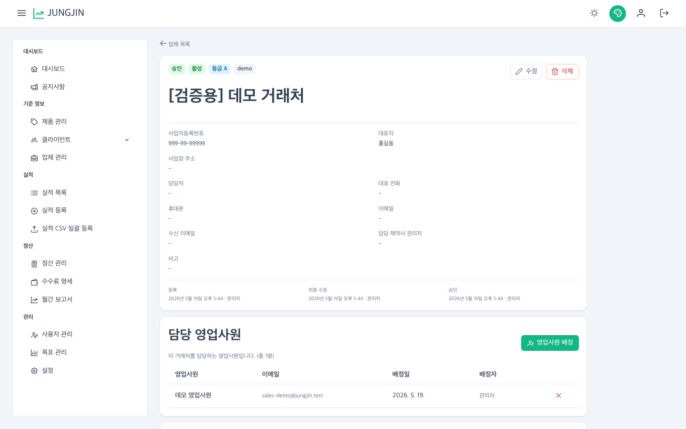
그림 7. 거래처 상세 — 담당 영업사원 배정 카드
5.5 약국·병원
- 마스터 조회·등록·수정 (관리자)
- CSV 일괄 등록 지원 (약국·병원 각각)
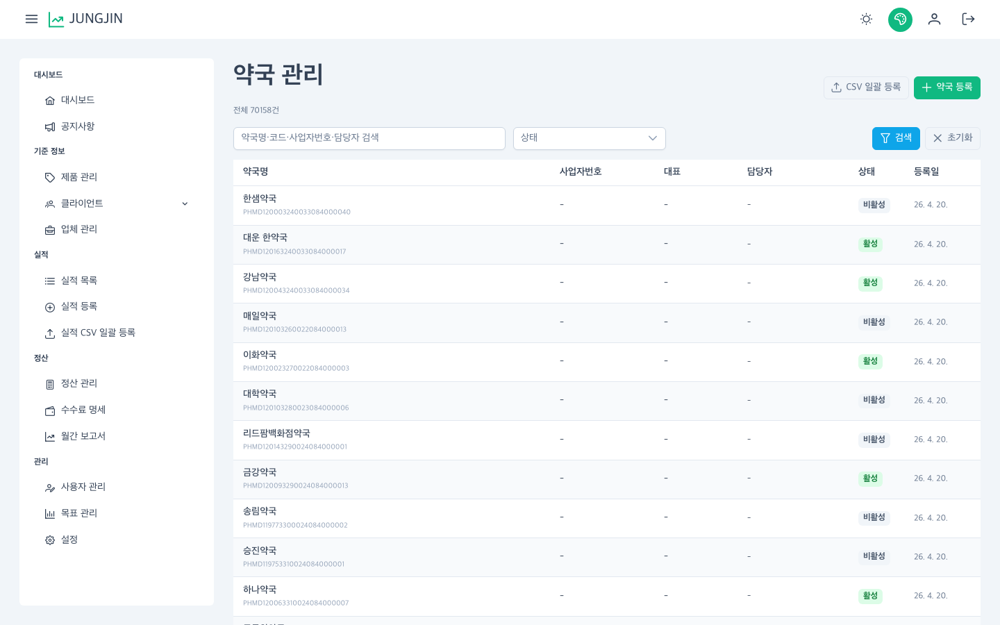
그림 8. 약국 마스터 목록
5.6 실적 관리
등록·일괄 등록
- 단건: 실적 등록 → 거래처·제품·실적일·수량 → 화면에서 단가·수수료·매출액 미리보기 확인 후 저장
- CSV: 실적 CSV 일괄 등록 — 샘플 파일 형식 준수
- 제한: 미승인 거래처·판매 불가 제품·미래 실적일은 등록 불가
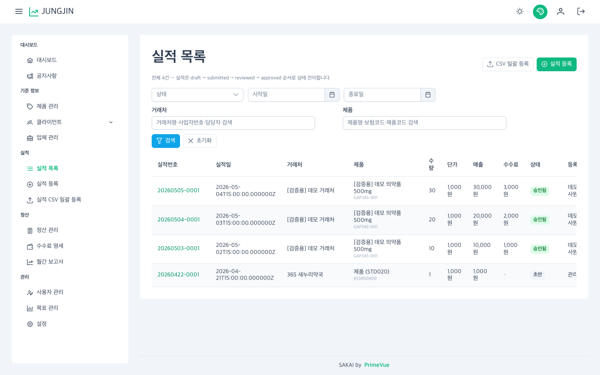
그림 9. 실적 목록 — 상태·기간 필터
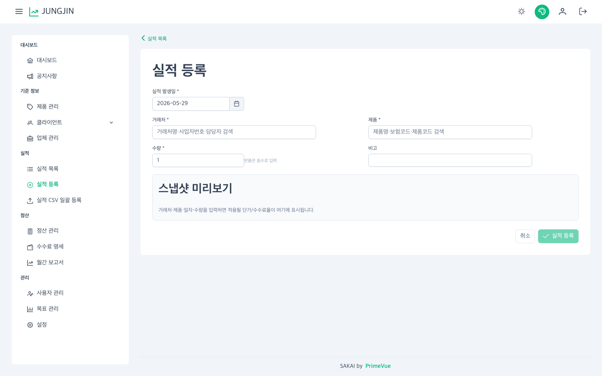
그림 10. 실적 등록 — 단가·수수료 미리보기
검수·승인 (관리자)
| 현재 상태 | 관리자 작업 | 다음 상태 |
|---|---|---|
| 제출됨 (submitted) | 검수 | 검수됨 (reviewed) |
| 검수됨 (reviewed) | 승인 | 승인됨 (approved) |
| 제출/검수 | 반려 (사유 필수) | 반려됨 (rejected) |
| 승인됨 | 취소 | 취소됨 (cancelled) |
- 증빙 파일: 실적 상세에서 PDF·이미지·문서 첨부(최대 5개, 파일당 10MB). 검수 시 근거로 활용
- 정산에 이미 포함된 실적은 수정·취소할 수 없습니다.
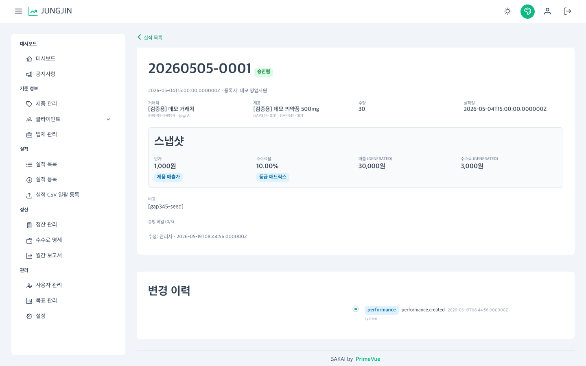
그림 11. 실적 상세 — 상태·금액·증빙 파일·검수/승인 버튼
5.7 정산 관리
정산 생성
- 정산 관리 → 정산 생성
- 거래처 + 정산 월 선택
- 해당 월 승인된 실적이 자동 집계되어 정산 번호(
YYYYMM-NNNN)가 부여됩니다.
검토·확정·지급
| 상태 | 의미 | 가능 작업 |
|---|---|---|
| 초안 (draft) | 생성 직후 | 재계산, 확정, 취소 |
| 확정 (confirmed) | 금액 확정 | 지급 처리, 증빙 업로드, Excel/PDF |
| 지급완료 (paid) | 지급 기록 완료 | 증빙 추가,보내기 |
| 취소 (cancelled) | 무효 | — |
- 재계산: 승인 실적 기준으로 라인을 다시 만듭니다. 확정 이후에는 불가
- 미반영 실적 경고: 확정·재계산 이후 새로 승인된 실적이 있으면 배너 표시 → 재계산 권장
- 지급 완료: 지급일(필수), 지급 수단(계좌이체/현금/기타), Batch No.(묶음 번호), 메모 입력
- 지급 증빙: 확정·지급완료 상태에서 이체확인서 등 첨부 (파일당 10MB)
- 목록 필터: Batch No.로 같은 묶음 지급 정산만 조회
- 보내기: 상세 화면에서 Excel·PDF (지급 정보 포함)
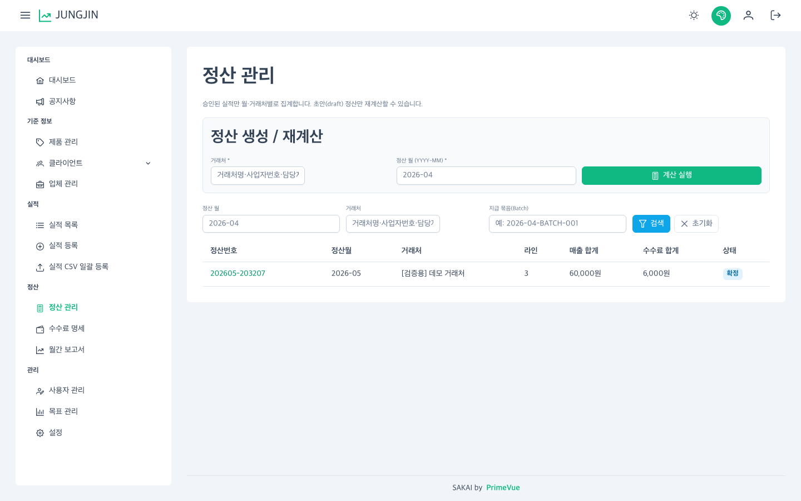
그림 12. 정산 목록 — Batch No. 필터
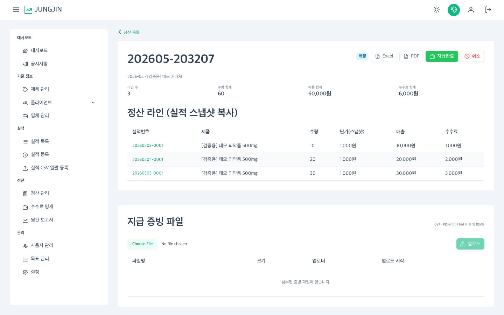
그림 13. 정산 상세 — 라인·지급 정보·증빙
5.8 수수료 명세 (/commission-summary)
- 기간(월 또는 from~to) 선택 → 영업사원별 수수료 합계 테이블
- 개인 명세서 화면·PDF 다운로드
- Excel보내기 (관리자)
집계 기준: 승인된 실적의 commission_amount 합계
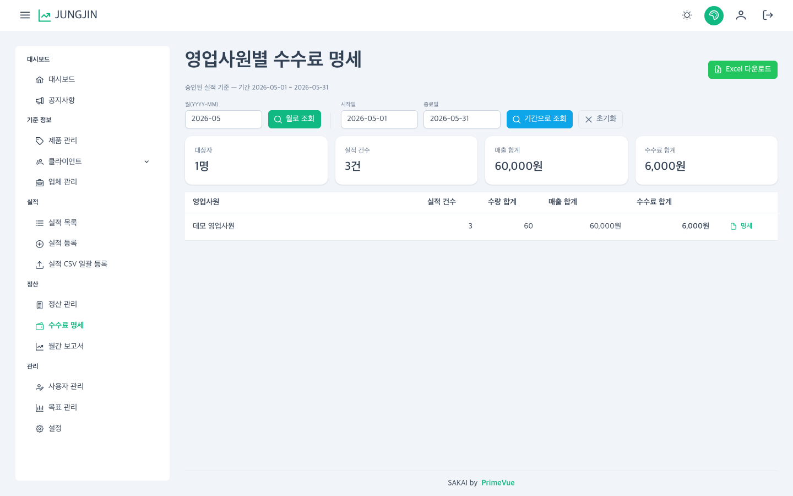
그림 14. 영업사원별 수수료 명세(관리자)
5.9 월간 보고서 (/reports/monthly)
- 기준 월(또는 기간) 선택
- 화면 3개 탭: 거래처별 / 영업사원별 / 제품별 요약
- Excel 다운로드: 1개 파일, 3개 시트 (승인 실적 기준 집계)
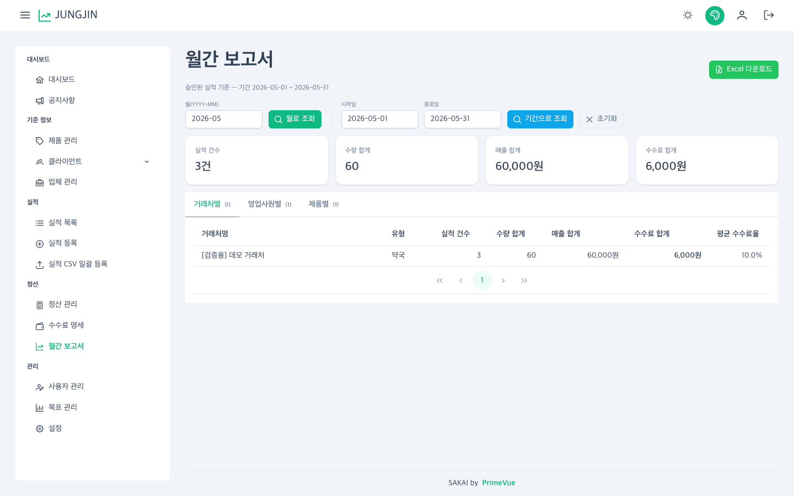
그림 15. 월간 보고서 — 거래처/영업사원/제품 탭
5.10 목표 관리 (/sales-quotas)
- 영업사원·제품(선택)·기간(월/분기/년)·목표 금액 등록·수정·삭제
- 달성률은 승인 실적 매출(subtotal) 기준으로 자동 계산
- 관리자 대시보드·영업 대시보드에 달성률 표시
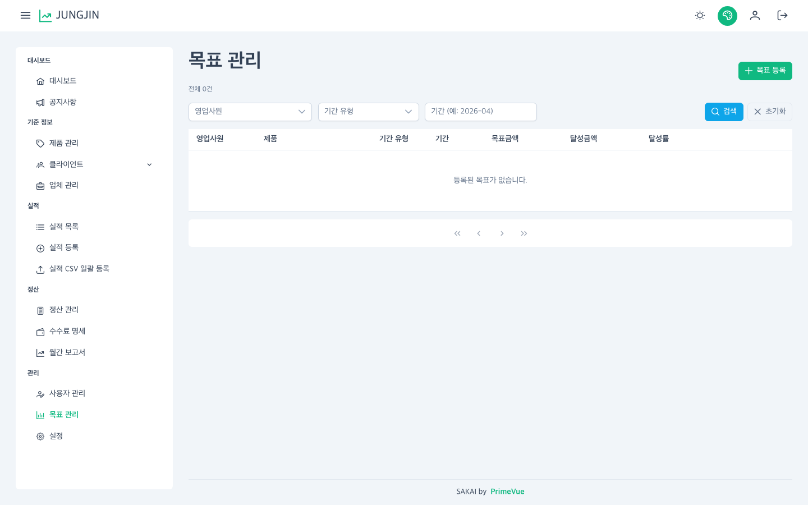
그림 16. 목표 관리 — 달성률
5.11 사용자 관리 (/users)
| 작업 | 설명 |
|---|---|
| 등록 | 이름, 이메일, 역할(admin/sales), 비밀번호 |
| 비밀번호 재설정 | 관리자가 임시 비밀번호 설정 |
| 비활성화 | 로그인 차단 (데이터는 유지) |
| 삭제 | 사용자 제거 |
관리자 본인 계정은 삭제·비활성화할 수 없습니다.
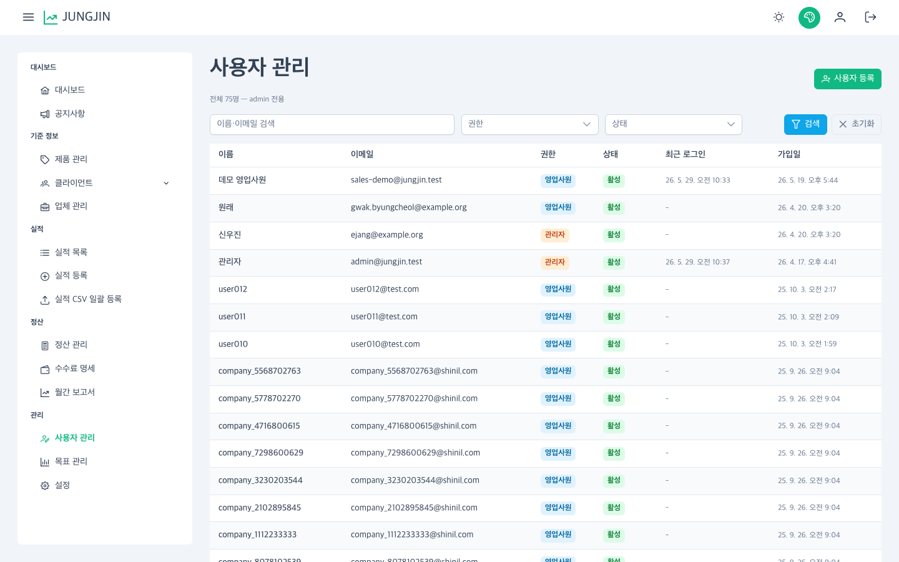
그림 17. 사용자 관리
6. 영업사원 사용법
6.1 영업 대시보드 (/sales/dashboard)
- 이번 달 본인 실적 매출·수수료 요약
- 실적 상태별 건수, 월별 추이 차트
- 목표 달성률, 이번 달 수수료 + 명세서 바로가기
- 내 담당 거래처 (상위 5건 + 전체 보기)
- 최근 반려 실적 — 반려 사유 확인 후 수정·재제출
- 월별 실적 차트 — 최근 12개월 승인 실적 추이 (P2-8)
- 제출 대기 — draft 실적 목록으로 바로가기 (P2-8)
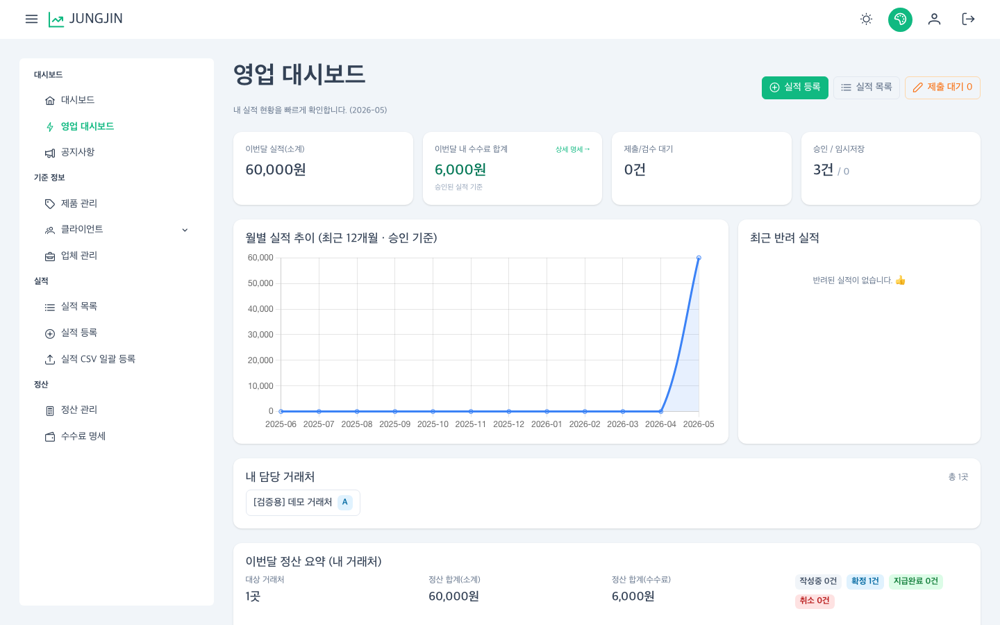
그림 18. 영업사원 대시보드 — 목표·수수료·담당 거래처·반려 실적
6.2 실적 등록·제출
- 실적 등록 → 거래처·제품·실적일·수량 입력
- 미리보기 금액 확인 → 저장 (상태: 임시저장/draft)
- 실적 상세 → 증빙 파일 첨부(선택)
- 내용 확인 후 제출 → 상태: 제출됨
- 반려된 경우: 상세에서 반려 사유 확인 → 수정 → 다시 제출
담당 거래처는 거래처 검색 시 목록 상단에 우선 표시됩니다.
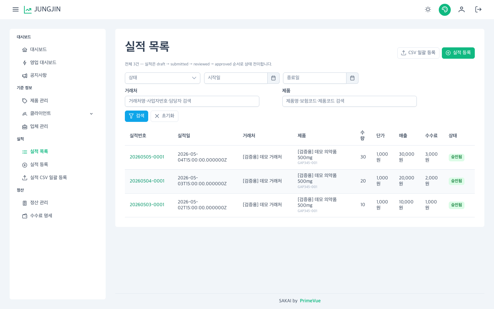
그림 19. 실적 목록(본인 건만 표시)
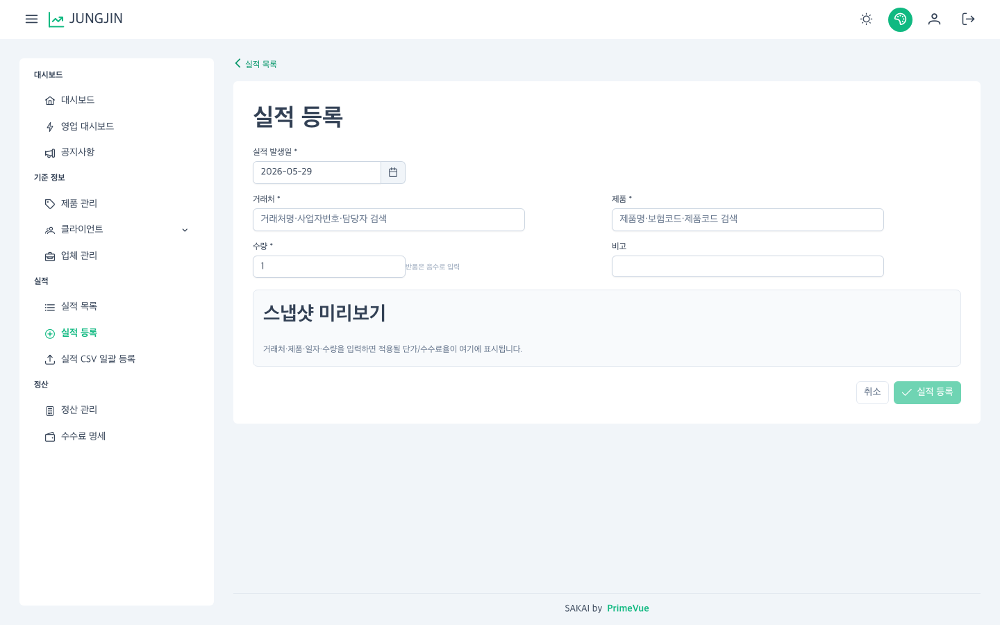
그림 20. 실적 등록
6.3 실적·정산 조회
- 실적 목록: 본인이 등록한 실적만 표시 (상태·기간·거래처·제품 필터)
- 정산 관리: 본인 실적이 포함된 정산만 조회·Excel/PDF 다운로드·지급 증빙 다운로드
6.4 수수료 명세
- 메뉴 수수료 명세 → 본인 개인 명세서
- 기간 선택 후 PDF 다운로드 가능
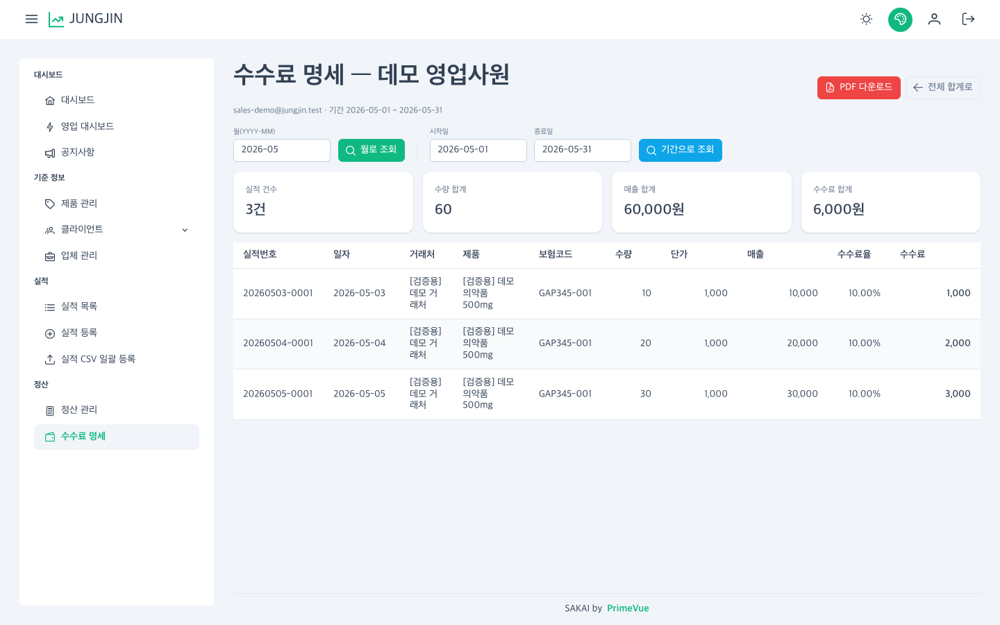
그림 21. 개인 수수료 명세서
6.5 공지·프로필
- 공지사항: 필수(상단 고정) 공지 우선 확인
- 설정: 이름·이메일·비밀번호 변경
7. 업무 시나리오 (단계별)
7.1 신규 영업사원 온보딩
(관리자) 사용자 관리 → 등록 (역할: sales, 임시 비밀번호)
↓
(영업사원) 로그인 → 설정에서 비밀번호 변경
↓
(관리자) 거래처 상세에서 담당 영업사원 배정
↓
(영업사원) 영업 대시보드·공지 확인 후 실적 등록 시작
7.2 신제품 등록 후 실적 반영
(관리자) 제품 등록 → 가격·수수료율 설정 → 제출 → 검수 → 승인
↓
(영업사원) 실적 등록 시 해당 제품 선택 가능
7.3 실적 등록부터 승인까지
(영업사원) 실적 등록 → 제출
↓
(관리자) 실적 목록(제출됨) → 검수 → 승인
※ 이상 시: 반려 + 사유 → (영업사원) 수정 후 재제출
7.4 월말 정산·지급
(관리자) 해당 월 실적 승인 완료 확인
↓
정산 생성 (거래처 × 월) → 상세에서 금액 검토 → 재계산(필요 시)
↓
정산 확정 → 지급 완료(지급일·수단·Batch·메모) → 증빙 첨부
↓
(관리자/영업사원) Excel 또는 PDF보내기
7.5 월간 전사 보고
(관리자) 월간 보고서 → 기간 선택 → 탭별 미리보기 → Excel 다운로드
8. 상태 표시 (요약)
실적 상태
임시저장(draft) → 제출(submitted) → 검수(reviewed) → 승인(approved)
↓ ↓
반려(rejected) ←──────┘
↓
(수정 후 재제출)
승인(approved) → 취소(cancelled) [관리자만]
정산 상태
초안(draft) → 확정(confirmed) → 지급완료(paid)
↓ ↓
취소(cancelled) ←┘
제품 승인
초안 → 제출 → 검수 → 승인 → (필요 시) 단종
↓
반려 → 수정 후 재진행
9. 단가·수수료가 정해지는 방법
실적 저장 시점에 아래 우선순위로 단가·수수료가 고정(스냅샷)됩니다. 이후 마스터 가격이 바뀌어도 이미 저장된 실적 금액은 변하지 않습니다.
| 순위 | 단가 | 수수료율 |
|---|---|---|
| 1 | 거래처×제품 예외 단가 | 거래처×제품 예외 수수료 |
| 2 | 제품 매출가 | 수수료율 매트릭스(거래처 등급·기간) |
| 3 | 제품 보험약가 | — |
매출액 = 단가 × 수량
수수료 = 매출액 × 수수료율(해당 시)
10. 자주 묻는 질문 (FAQ)
Q. 실적을 저장할 수 없어요.
- 거래처가 승인됨인지, 제품이 승인·판매중인지 확인하세요.
- 실적일이 오늘 이후이면 등록할 수 없습니다.
Q. 실적을 수정할 수 없어요.
- 이미 정산 라인에 포함된 실적은 수정·삭제가 불가합니다. 관리자에게 문의하세요.
Q. 반려된 실적은 어떻게 하나요?
- 실적 상세에서 반려 사유를 확인한 뒤 수정하고 다시 제출하세요. 영업 대시보드의 최근 반려 목록에서 바로갈 수 있습니다.
Q. 수수료 금액은 어디서 보나요?
- 영업사원: 영업 대시보드 또는 수수료 명세.
- 관리자: 수수료 명세 집계 화면.
Q. 정산 금액과 실적 합이 다릅니다.
- 정산은 승인된 실적만 포함합니다. 미제출·미승인 실적은 제외됩니다.
- 승인 후 정산이 만들어졌다면 재계산이 필요할 수 있습니다(초안 상태만).
Q. 파일을 다운로드할 수 없어요.
- 로그인 상태인지 확인하세요. 첨부 파일은 인증된 사용자만 다운로드할 수 있습니다.
Q. 메뉴가 보이지 않아요.
- 역할(admin/sales)에 따라 메뉴가 다릅니다. 관리자 전용 기능은 영업사원 계정에 표시되지 않습니다.
11. 용어집
| 용어 | 설명 |
|---|---|
| 실적 | 거래처·제품·수량·실적일이 기록된 판매 1건 |
| 정산 | 특정 거래처의 특정 월 승인 실적을 묶은 청구 단위 |
| 보험약가 | 심평원 고시 기준 약가 |
| 매출가 | 실제 판매 단가 |
| 예외 단가 | 특정 거래처에만 적용하는 단가·수수료 |
| 수수료율 매트릭스 | 제품·거래처 등급·기간별 수수료율 표 |
| Batch No. | 같은 지급 건을 묶는 지급 묶음 번호 |
| 스냅샷 | 실적 저장 시점에 고정된 단가·수수료 |
12. 문의·장애
- 계정·권한: 관리자(CSO)
- 시스템 장애·오류 화면: 관리자에게 스크린샷·발생 시각·수행한 메뉴를 함께 전달해 주세요.
부록: 개발·운영 문서 (참고)
| 문서 | 용도 |
|---|---|
planning/PRODUCT_SPEC.md |
기능 명세·권한 표 (상세) |
planning/ROADMAP.md |
개발 진행·예정 기능 |
operations/OPERATIONS.md |
서버·백업·큐 (운영 담당) |
본 매뉴얼은 현재 구현된 화면·권한을 기준으로 작성되었습니다. 메뉴나 기능이 추가되면 PRODUCT_SPEC.md 및 본 문서를 함께 갱신합니다.